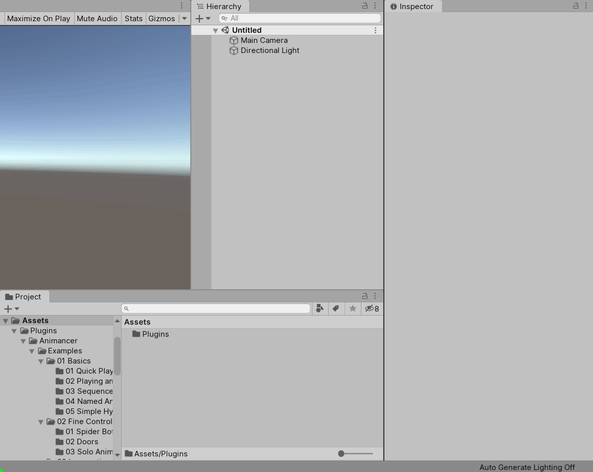

Script Editors
C# scripts are plain text files with the .cs file extension. This means you can edit them using any text editor (such as Notepad in Windows), however there are specialised programs known as IDEs (Integrated Development Environments) which are specifically designed for programmers to write code efficiently using features such as:
- Syntax highlighting.
- Displaying errors in the code.
- Code completion suggestions.
- Refactoring tools, such as the ability to rename something and have it automatically update everything else that references it to use the new name.
- And many more.
The industry standard IDE for C# development is Microsoft Visual Studio which has a free Community version. The Unity Manual explains how to set up Unity to use it as your script editor. There are many other IDEs on the market with their own advantages and disadvantages.
New Scripts
You can create a new script by right clicking in the Project window and selecting Create/C# Script. Once you give it a name and wait for Unity to re-compile, you will be able to open and edit it.

That will create a file which looks like this:
using System.Collections;
using System.Collections.Generic;
using UnityEngine;
public class HelloWorld : MonoBehaviour
{
// Start is called before the first frame update
void Start()
{
}
// Update is called once per frame
void Update()
{
}
}
Once you understand the basics of scripting, it is recommended that you edit the Default Script Template.
Here is a breakdown of the main elements in that script:
| Code | Topic |
|---|---|
using UnityEngine; |
Using Statement |
public |
Access Modifier |
class HelloWorld |
Class |
: MonoBehaviour |
Inheritance |
// Start is called before the first frame update |
Comment |
void Start() |
Method |
Also note that if a class inherits from MonoBehaviour or ScriptableObject, Unity requires the class name to exactly match the file name (the HelloWorld class is in the HelloWorld.cs script file). For other classes the script name doesn't matter but it is still generally a good practice to make them match.
If you have trouble understanding the concepts introduced here, you might want to start with some tutorials on the Unity Learn website to learn the basics of programming and using Unity.
Compilation
Computers do not directly execute the text that you write in script files because that would be extremely inefficient. Instead, the scripts need to first be compiled into a series of instructions that can be executed efficiently:
- Whenever you modify a script, the project needs to be re-compiled. In Unity, this is done by simply saving the script then returning to the Unity Editor which will automatically detect the change and display a spinning icon in the bottom right corner while it compiles.
- If it encounters any Errors that prevent it from compiling, Unity will display them in the Console window and will not allow you to enter Play Mode.
- Warnings will also be displayed and do not prevent you from entering Play Mode, but you should still work to avoid warnings to keep your project clean and avoid missing other messages in the Console. Not all warnings are necessarily relevant though, so the Usage Warnings section explains how you can selectively disable them.
Assemblies
C# scripts get compiled into Assemblies which are either Executable (.exe) or Dynamic Link Library (.dll) files. Your scripts in Unity will be compiled into .dlls.
- Animancer Lite has all of its core scripts compiled into a .dll file since it does not include access to the source code (see the DLLs page for more information).
- Animancer Pro includes all of its scripts as regular C# files so that you can read and modify them.
- Assembly Definition files tell Unity to compile the scripts in a particular folder into a separate assembly from the rest of the project.
- Animancer uses an assembly definition file located at Assets/Plugins/Animancer/Animancer.asmdef so that any
internalmembers in its scripts are not accessible to user scripts. - This also speeds up compile times because once Animancer is compiled, Unity does not need to re-compile it every time any script in the project is changed, only when scripts in that assembly are changed.
- Animancer uses an assembly definition file located at Assets/Plugins/Animancer/Animancer.asmdef so that any
- All .dll files compiled by Unity are located in the Library\ScriptAssemblies folder of your project (outside Assets).